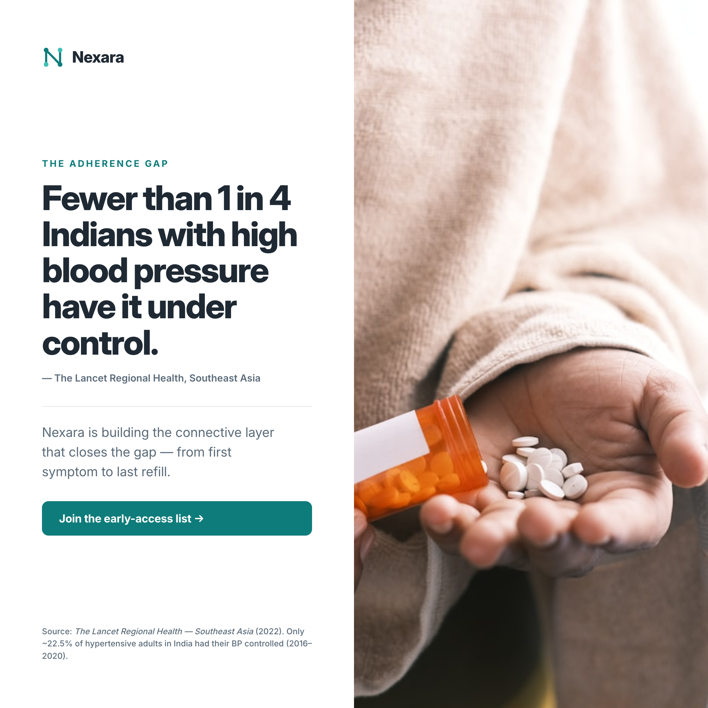
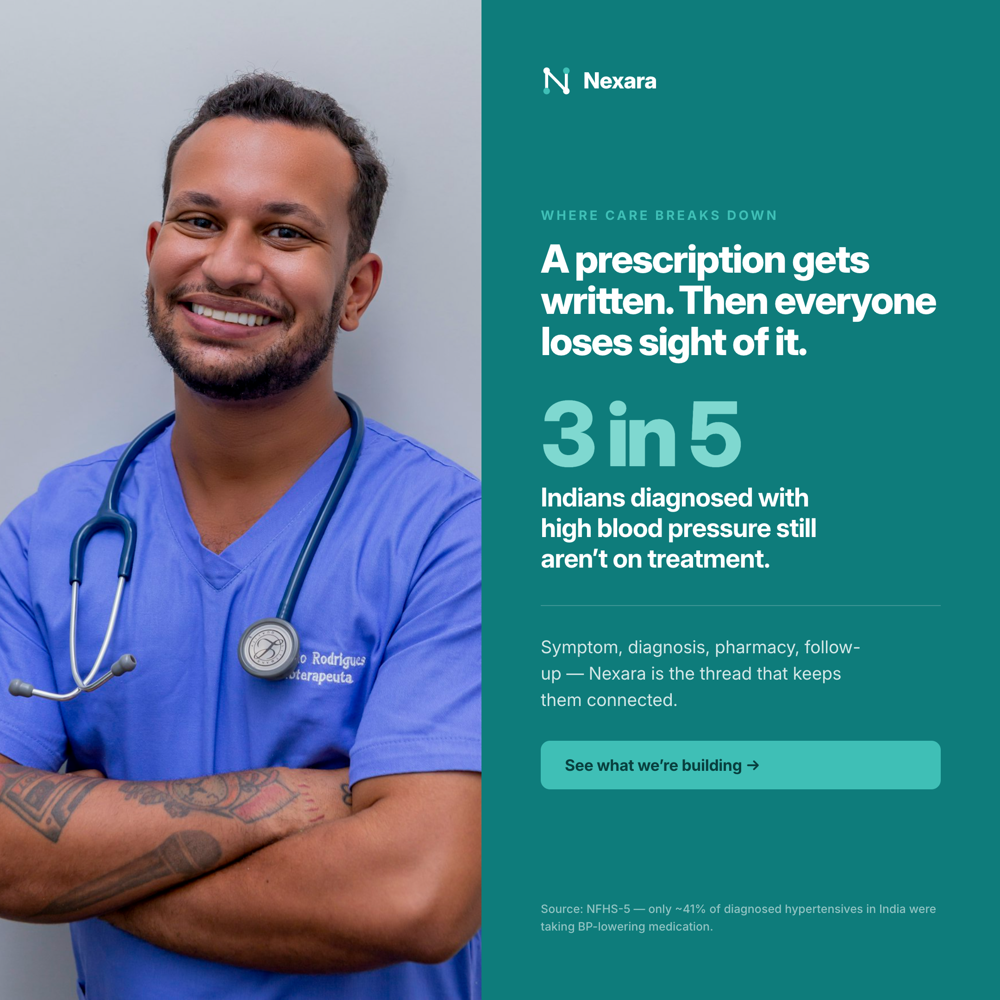
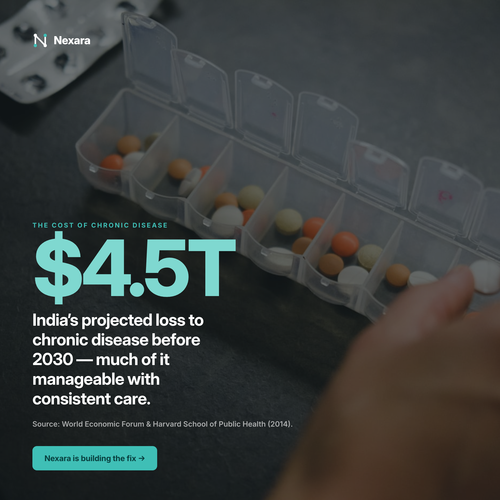
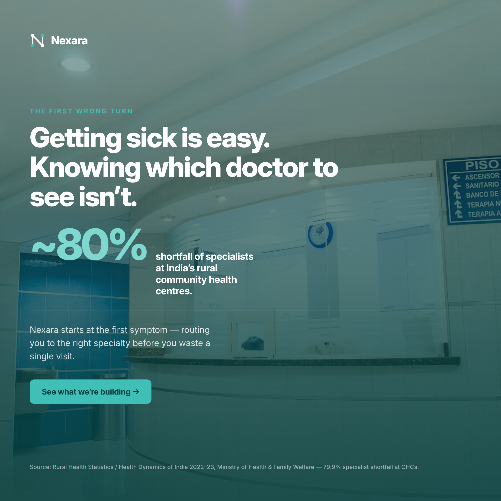
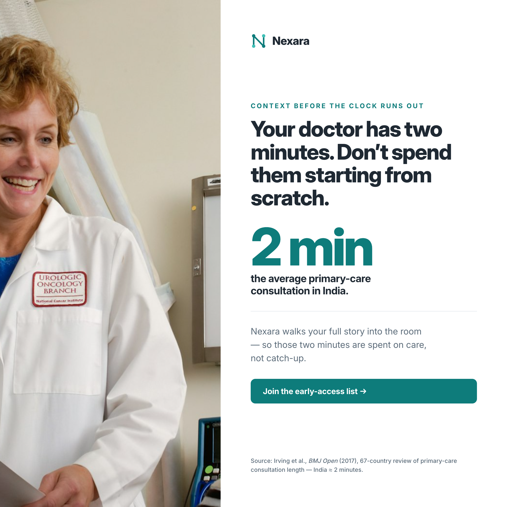
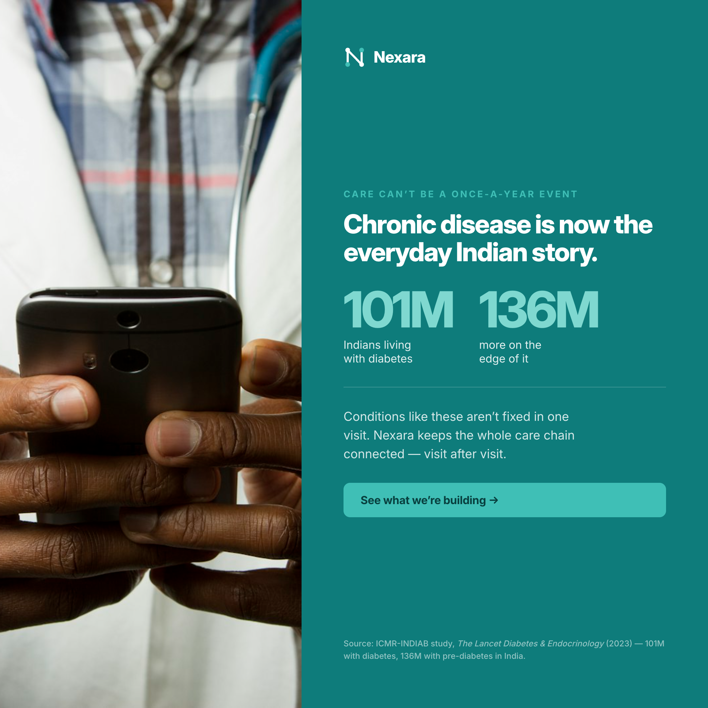
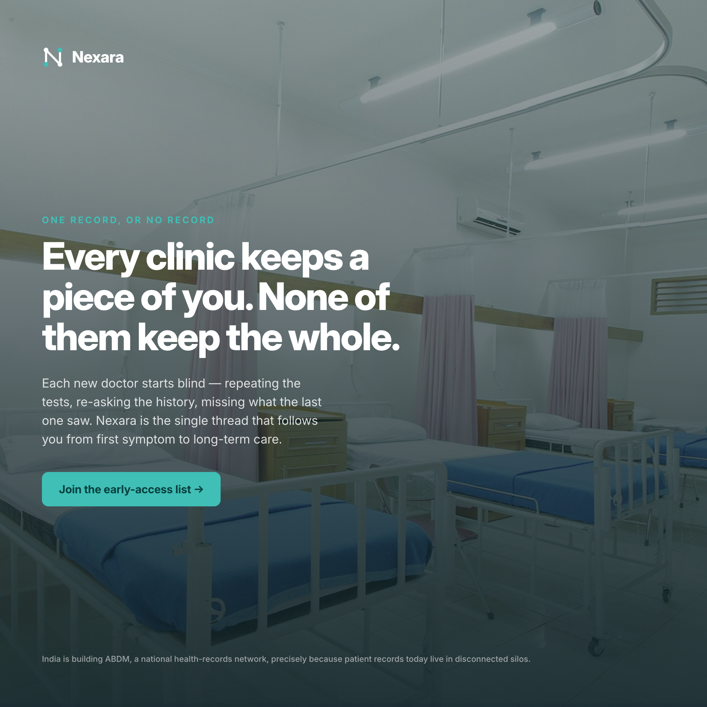
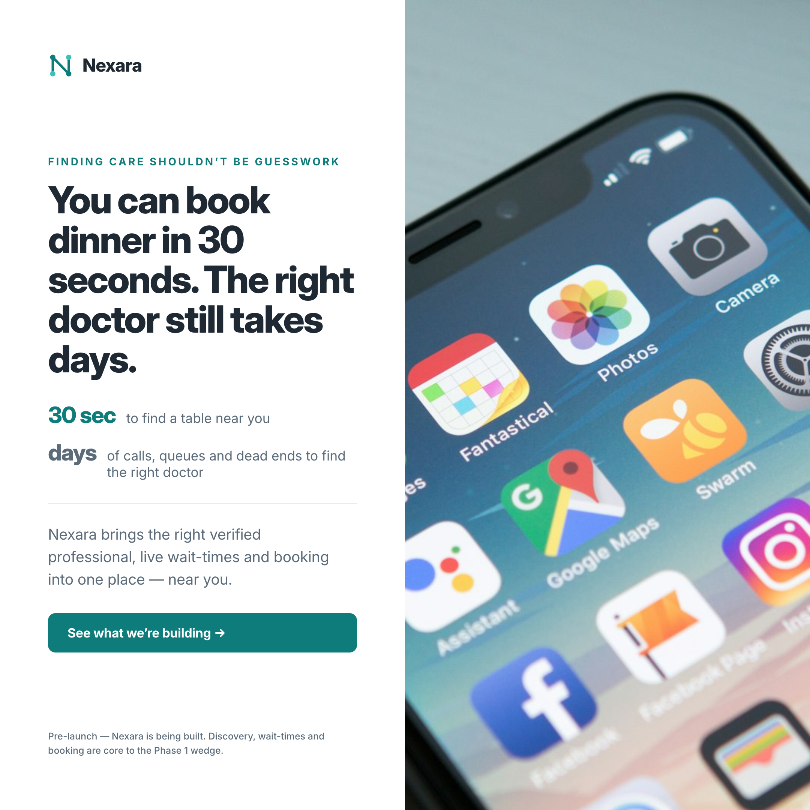
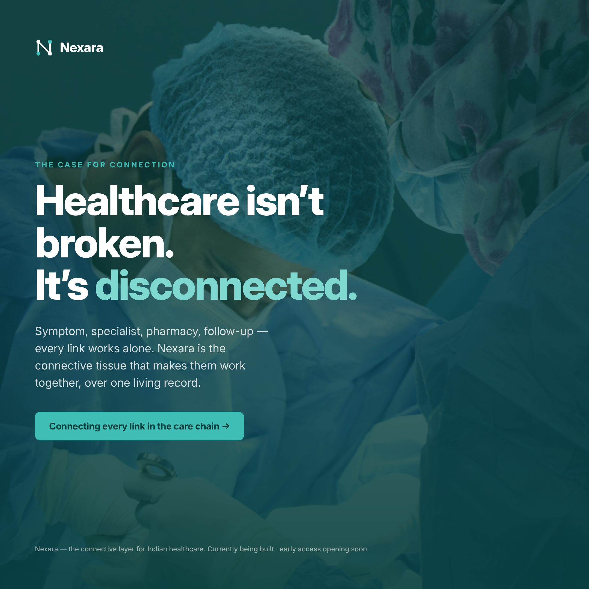
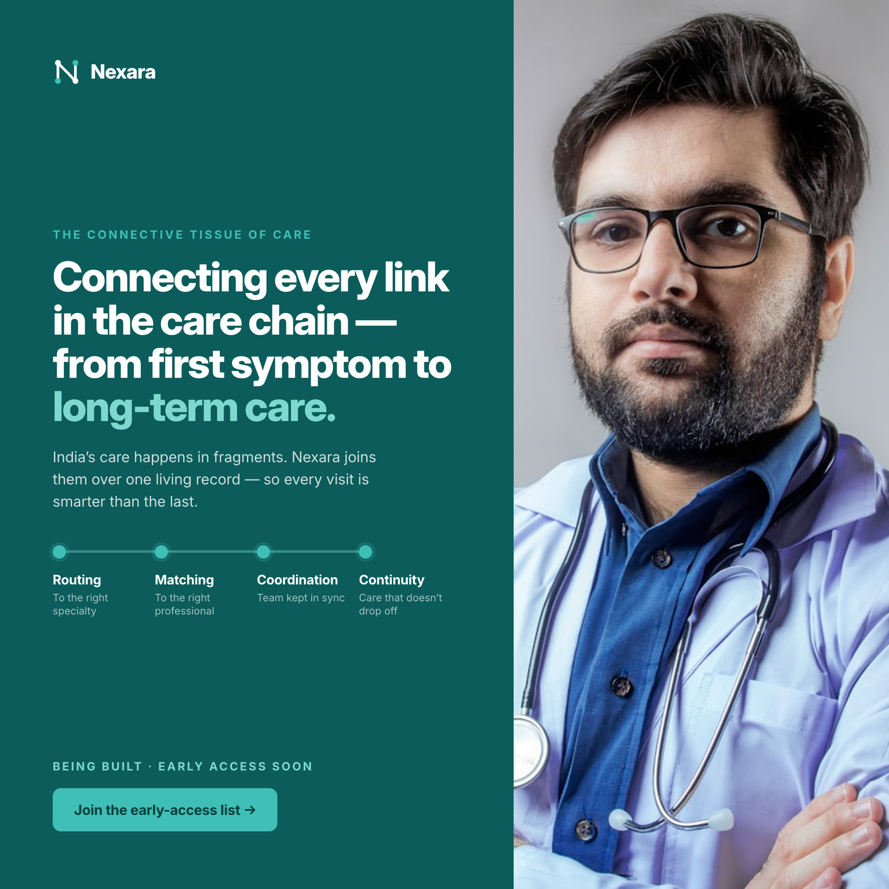

Pre-launch ads for Nexara. They lead with the real, current problems of Indian healthcare — no product claims — and position Nexara as the connective layer being built to fix them. Two sets: the narrow adherence focus, and the whole-platform connective-tissue story across all four layers.
The retention layer — why care breaks down after the prescription.



The connective-tissue story — routing, matching, coordination and continuity over one record. Audience: urban, can-pay Indians who can reach care but still fight a disconnected system.







Format: 1080×1080 (LinkedIn / Instagram feed), exported at 2× (2160px).
Photos: Unsplash (free license).
Re-render: bash render.sh post-04-door post-05-twomin post-06-burden post-07-thread post-08-find post-09-manifesto post-10-brand.
See README.md for copy, sources, and credits.